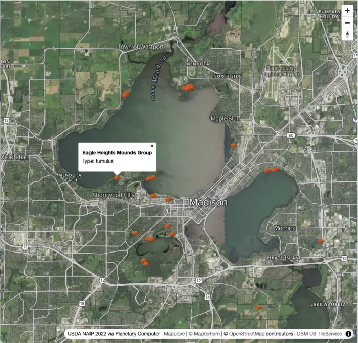
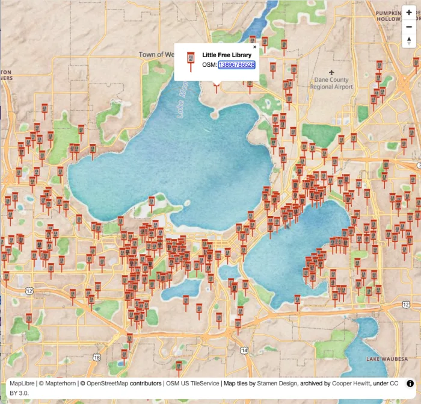

Introduction to Web Maps
This workshop guides you through turning OpenStreetMap data into a working web map you can share with your community using only open tools and infrastructure you control.
What You'll Build
A web map of Madison, WI built from scratch with MapLibre GL JS. You'll choose your theme: Little Free Libraries or Effigy Mounds, and query it live and style it visually with Overpass Ultra, and add it into a basemap you pick (painterly watercolor or USDA aerial imagery). You'll learn how to host your creation for free on GitHub Pages.


Before We Begin: Setup Instructions
Please complete this setup before the workshop session begins. This way we can hit the ground running.
If you run into trouble during setup, please reach out to Stephanie May on OpenStreetMap Slack (or find me in person).
Fork the Repository
The first thing you need to do is fork the workshop repository. This gives you a personal copy to edit and publish.
- Create a GitHub account if you don't already have one
- Go to github.com/mizmay/intro-to-web-maps
- Click Fork (top right) → Create fork
- Your copy now lives at
github.com/YOUR-USERNAME/intro-to-web-maps
At the end of the workshop, you'll enable GitHub Pages on your fork and share a live URL: YOUR-USERNAME.github.io/intro-to-web-maps/
Choose Your Path
The additional setup required depends on whether you prefer to work locally on your own machine, and therefore need to install software and dependancies, or whether you are fine using a virtual machine in the cloud.
Path A: GitHub Codespaces. Everything runs in a cloud-hosted development environment in your browser with everything pre-installed. No installs required beyond the GitHub account you just used to fork. This is the recommended option for beginners.
Path B: Local Setup. Everything runs on your own machine. Requires developer tools (Git, Caddy, VS Code). Choose this if you prefer to work from your laptop or want to continue using the project after the workshop without relying on a GitHub cloud environment.
Path A: GitHub Codespaces
GitHub Codespaces gives you a full VS Code-like development environment in your browser. Caddy and the PMTiles CLI are pre-configured in the repository's devcontainer; nothing to install.
- On your fork, click Code → Codespaces tab → Create codespace on main
- Wait for the environment to build (about 1–2 minutes on first launch)
- A VS Code-like editor opens in your browser with the repo pre-loaded
- There should be a command line in the terminal window in the bottom panel. If not, go to Terminal menu → New Terminal (or press
Ctrl+`) - At the command line in the terminal, type:
caddy run
- A notification may appear asking whether to open the forwarded port. Click Open in Browser. You should see NAIP aerial imagery of the Madison area with terrain hillshade — that's
index.htmlpre-loaded with the imagery basemap. You're all set for the workshop.
Verification checklist:
- Codespace launches without errors
caddy runstarts without errors- Imagery basemap loads in the browser tab that opens from the forwarded port
Path B: Local Setup
You need three tools installed on your machine. Several steps below require a terminal — a text-based window where you type commands and press Enter to run them.
- macOS: Open the Terminal app. Find it in Applications → Utilities, or press
Cmd+Spaceand search "Terminal." - Windows: Open Command Prompt or PowerShell. Press the Windows key, type "cmd" or "powershell," and press Enter.
- Linux: Open your distro's terminal emulator. Right-click the desktop and look for "Open Terminal," or search your app launcher.
Once VS Code is installed, you can use its built-in terminal instead: open it with Terminal menu → New Terminal (or Ctrl+`). The verification steps at the end of this section assume you're using VS Code's integrated terminal.
1. Git
macOS: Open Terminal and run:
git --version
If Git isn't installed, macOS will prompt you to install Xcode Command Line Tools. Accept it.
Windows: Download and install Git for Windows. Accept all defaults.
Linux (Debian/Ubuntu):
sudo apt install git
Verify:
git --version
# git version 2.x.x
2. VS Code (or another code editor)
You'll be editing index.html during the workshop. Any text editor works, but VS Code is recommended. It matches the interface you see in Codespaces.
Download: code.visualstudio.com
3. Caddy Web Server
Caddy serves your map files locally. We use Caddy instead of Python or Node because the workshop uses PMTiles for terrain tiles. PMTiles relies heavily on HTTP byte-range requests. While Python and Node can do this, Caddy handles production-grade range requests, caching, and CORS headers out of the box with a simple, one-line configuration.
macOS (Homebrew):
brew install caddy
macOS (without Homebrew): Download from caddyserver.com/docs/install
Windows: Download the .exe from caddyserver.com/docs/install and add it to your PATH. The install page has step-by-step instructions. If you are uncertain or lack permissions, consult your domain administrator.
Linux (Debian/Ubuntu):
sudo apt install -y debian-keyring debian-archive-keyring apt-transport-https curl
curl -1sLf 'https://dl.cloudsmith.io/public/caddy/stable/gpg.key' | sudo gpg --dearmor -o /usr/share/keyrings/caddy-stable-archive-keyring.gpg
curl -1sLf 'https://dl.cloudsmith.io/public/caddy/stable/debian.deb.txt' | sudo tee /etc/apt/sources.list.d/caddy-stable.list
sudo apt update
sudo apt install caddy
Verify:
caddy version
# v2.x.x
4. Clone and Open Your Fork
Using VS Code (no terminal needed for this step):
- Open VS Code. You should see "Clone Git repository..." on the welcome screen. Click that, or if you don't see it:
- Press
Cmd+Shift+P(macOS) orCtrl+Shift+P(Windows/Linux) to open the Command Palette - Type Git: Clone and press Enter
- Press
- Paste your fork URL:
https://github.com/YOUR-USERNAME/intro-to-web-maps - Choose a folder on your machine, then click Open Repository when prompted
Using a terminal:
git clone https://github.com/YOUR-USERNAME/intro-to-web-maps
cd intro-to-web-maps
code .
Optional: PMTiles CLI
The PMTiles CLI lets you extract terrain and raster tiles for any area. It's already installed in Codespaces. For local setup it's optional — terrain tiles for the workshop are already included in the repo. Install it if you want to extract tiles for your own area after the workshop.
macOS (Homebrew):
brew install pmtiles
All platforms: Download a binary from github.com/protomaps/go-pmtiles/releases
Verify:
pmtiles version
Path B Verification Checklist
- Open VS Code's integrated terminal: Terminal menu → New Terminal (or press
Ctrl+`) - Check your tools:
git --version # git version 2.x.x or higher
caddy version # v2.x.x
- Start the local server from the
intro-to-web-mapsfolder:
caddy run
- Open http://127.0.0.1:1234/ in your browser. You should see NAIP aerial imagery of the Madison area with terrain hillshade — that's
index.htmlpre-loaded with the imagery basemap. You're all set for the workshop.
Workshop Steps
Once you've completed setup, you're ready for the session. Here's what we'll build:
- Step 1: Verify Setup + Preview Basemaps: Open the map, read the initialization code, and choose your basemap
- Step 2: Extract + Style Data: Query your dataset from OSM and style it in Overpass Ultra
- Step 3: Add Data Layer + Popup: Add your styled data to the map with a click popup
- Step 4: Publish to GitHub Pages: Enable Pages on your fork and share a live URL
- Bonus: Swap + Explore: Swap basemaps, try the other dataset, or run a new Overpass query
About This Workshop
SotM US 2026 · Thursday, June 11 · 3:45–5:00 pm CDT
University Room A/B/C
Presented by Stephanie May. Source: github.com/mizmay/intro-to-web-maps.
Questions?
If you have trouble with setup, open an issue on github.com/mizmay/intro-to-web-maps or bring your laptop to the session early.